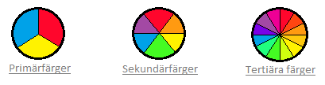

Färghjulet
En färgcirkel, baserad på rött, gult och blått, är traditionellt inom konstområdet. Sir Isaac Newton utvecklade det första cirkeldiagrammet över färger 1666. Sedan dess har forskare och konstnärer studerat och utformat många variationer av detta koncept. Meningsskiljaktigheter om ett formats giltighet gentemot ett annat fortsätter att framkalla debatt. I verkligheten har varje färgcirkel eller färghjul som presenterar en logiskt ordnad sekvens av rena nyanser meriter.
Färghjulet är baserat på de tre basfärger som vi människor kan se, röd, blå och gul. Alla färger däremellan, som grön, lila eller orange är endas en blandning av dessa färger.
Primärfärgerna
Röd, gul och blå, I traditionell färgteori (används i färg och pigment) är primärfärger de tre pigment färgerna som inte kan blandas eller bildas av någon kombination av andra färger. Alla andra färger härrör från dessa tre nyanser.
Sekundära färgerna
Grön, orange och lila, dessa är de färger som bildas genom att blanda de primära färgerna.
Tertiära färger
Gul-orange, röd-orange, röd-lila, blå-lila, blå-grön & gul-grön. Dessa är färgerna som bildas genom att blanda en primär och en sekundär färg. Det är därför nyansen är ett två ords namn, som blå-grön, röd-violett och gul-orange.